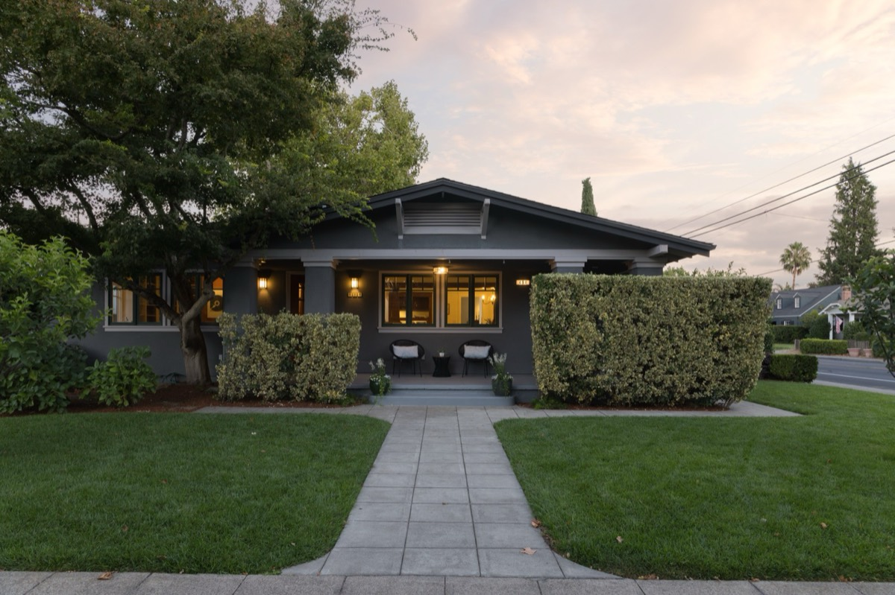

Buying a Craftsman Home Near Sonoma Plaza: What to Check First

The short answer: a Craftsman near Sonoma Plaza gives you real wood, built-ins and handmade details you can't buy new, a few blocks from the center of town. It also gives you an older house, or a rebuilt one, with its own set of questions. Before you write an offer, find out three things: whether the house is original or rebuilt, what the inspections turn up, and what the city allows you to change. Get those answers early and the rest of the decision gets a lot simpler.
Pattie Philibosian is a REALTOR® with eXp Realty of Northern California helping buyers and sellers in Sonoma and Petaluma. She is also the listing agent for 494 Fourth Street East, a single-story Craftsman a few blocks from the Plaza, so this guide uses that home as a real example.
What am I really buying when I buy a Craftsman near the Plaza?
You're buying two things at once: a house and a location.
The house is about character. A Craftsman is built around wood and handwork: oak floors, built-in cabinets and buffets, deep window trim, tapered porch columns, and doors with real weight to them. Many are single story, which a lot of buyers want.
The location is about the streets around Sonoma Plaza: older homes, mature trees, and the shops and restaurants of downtown a few blocks away.
The two come together, so judge them together. A beautiful house on a block you don't love is still the wrong house. A great block can't make up for a house that needs more work than you planned for.
Is it an original Craftsman or a rebuilt one, and why does that matter?
This is the first question to ask, because it changes almost everything after it.
An original Craftsman was built in the early 1900s and still has its original structure. It carries the most history. It can also carry original wiring, plumbing, foundation and windows that are more than 100 years old.
A rebuilt or renovated Craftsman keeps the look and the details on top of newer systems.
494 Fourth Street East is a good example of the second kind. It was completely rebuilt in 2002, and its original 1920 Craftsman details were kept: the oak Craftsman doors, the built-in dining buffet, and the trim. The roof is new as of 2025, the solar is owned, and the home has central heat and air.
Neither kind is better. They're different purchases. With an original, you're often buying the history and planning for updates. With a rebuild, you're buying the character with fewer unknowns behind the walls. Know which one you're looking at before you compare prices.
Ask the listing agent: when was it built, when was it rebuilt or remodeled, and what was replaced? Then check the permit history yourself. For a home inside Sonoma city limits, permit records are kept by the City of Sonoma, not the county. You can ask for them with a public records request through the city's website, or ask the Planning Division at City Hall, No. 1 The Plaza.
What should I look at when I walk through one?
Walk it like a buyer, not like a guest. Here's the order I'd use.
- Start outside. Look at the siding, paint, trim, gutters and the roof from the ground. Peeling paint on old wood trim isn't just cosmetic. It's where water gets in.
- Check the foundation line. Walk the outside edge of the house. Look for cracks, gaps or soil piled against the siding.
- Look at the floors. Original oak floors are a big part of the charm. Note any soft spots, cupping or water stains, especially in the kitchen and bathrooms.
- Open the built-ins. Buffets, cabinets and window seats should open and close cleanly. Sticking doors can point to settling.
- Look at the windows. Original wood windows are beautiful and often drafty. Ask whether they've been restored, replaced or left as they are.
- Look under the sinks. Kitchen and bathrooms. Stains, soft wood or a musty smell are worth asking about.
- Find the panel and the water heater. You don't need to know what you're looking at. Just take a photo of each for your inspector.
- Walk the garage, the yard and any outbuilding. In downtown Sonoma, many lots have a garage, a studio or a guest space, sometimes with alley access. Note what's there so you can ask about it.
Write down what you see. It makes your inspection questions sharper and your offer conversation easier.
What inspections should I plan for?
For an older home, plan on more than one inspection. Your agent can help you line them up inside your contingency period.
- A general home inspection. The starting point for every home.
- A termite and pest inspection. Wood homes need this one.
- A sewer line inspection. A camera goes down the line to the street. Older lines are often clay and can crack or fill with roots.
- A roof inspection, if the general inspector flags anything or the roof is older.
- A foundation or structural engineer, if the general inspector sees cracks, sloping floors or settling.
- An electrician, if the home has older wiring.
Lead paint: homes built before 1978 come with a federal lead-based paint disclosure, and you have the right to a lead inspection. A rebuilt home may still have older painted wood details, so ask.
The goal isn't to scare you off a house. The goal is to know the real cost of owning it before you commit.
Can I change the outside of a Craftsman in downtown Sonoma?
Maybe, and you should find out before you buy, not after.
The City of Sonoma has a Historic Overlay District around its older core, and changes to the outside of a home inside it can need design review, especially changes people can see from the street. The city posts a Historic Overlay Zone Map on its website, so you can check an address before you get attached to a plan.
Inside work, like a kitchen or a bathroom, usually follows the normal permit process. Outside work, like new windows, a second story, an addition or a new fence, can have extra steps.
If you're buying with a project in mind, call the City of Sonoma Planning Department with the address before you write an offer. One phone call can save months.
What about a studio or guest space above the garage?
Many homes near the Plaza have a second space on the lot: a studio, an office or a guest room above or beside the garage. These spaces are a big part of the appeal. They can also be the most misunderstood part of the house.
At 494 Fourth Street East, the studio is about 600 square feet above the garage, with its own entry, a full bath, a walk-in closet and two balconies. It has no kitchen.
Three questions to ask about any studio:
- Was it permitted, and as what? A permitted studio, a permitted guest unit and a full legal second unit are three different things.
- What can I legally use it for? A home office, guest space or creative studio is one thing. Renting it out is another. The City of Sonoma tightly limits short-term rentals of less than 30 days in residential areas, so check the current rules with the Planning Division before you count on any rental income.
- Is it included in the square footage? Some listings count it in the total, some don't. When you compare price per square foot between homes, make sure you're comparing the same thing.
What mistakes do buyers make with older Craftsman homes?
These are the ones that cost people the most.
- Falling for the buffet and skipping the sewer line. The built-ins sell the house. The pipes decide what it costs you.
- Assuming "Craftsman" means "original." Many are rebuilt or heavily remodeled. Ask, then check the permits.
- Comparing square footage that isn't the same. One listing counts the studio, another doesn't. Line them up before you decide what's a good price.
- Planning a project before calling the city. In a historic area, your dream addition may need approvals you didn't budget time for.
- Waiving inspections to look stronger. In an older home, that's a gamble with your savings. A clean, fast inspection plan usually does more for your offer than skipping one.
- Touring without a list. You'll remember the fireplace and forget the water stain. Walk with a checklist.
What does this look like in real life?
Here are two ways it can go. These are examples to show the process, not real clients.
Example one: the buyer who wants character with fewer surprises. They love Craftsman details but don't want to plan around 100-year-old plumbing. A rebuilt Craftsman like 494 fits what they're after: the original doors, buffet and oak floors, with a 2002 rebuild, a 2025 roof and owned solar underneath. Their inspection list is shorter, and their biggest question is how they'll use the studio.
Example two: the buyer who wants the original. They want the house exactly as it was built and are happy to restore it. Their plan is different. They budget for a sewer line, possible electrical updates and window restoration, and they call the city about exterior changes before they write an offer. Same neighborhood, same style, very different purchase.
Both are good plans. Knowing which buyer you are before you start touring saves a lot of time.
How do I start looking at Craftsman homes near the Plaza?
- Decide which kind you want: original, rebuilt, or open to both.
- Get your financing in order so you can move when the right one comes up.
- Make your must-have list. Single story? Studio or office space? Garden? Garage? Be specific.
- Tour with a checklist and take photos.
- Line up your inspectors before you write an offer, so you can schedule fast.
- Call the city about any project you're planning.
Don't worry about keeping all of this straight on your own. That's my job. I'll help you.
Frequently asked questions
Are Craftsman homes near Sonoma Plaza usually single story? Many are, though not all. 494 Fourth Street East is single story. Ask about the layout of every home you're considering, and check for steps at the entry and to any outbuilding.
How far is 494 Fourth Street East from Sonoma Plaza? It sits at Fourth Street East and East Napa Street, about 0.4 miles east of the Plaza in a straight line.
Do I need a special inspector for an older home? Start with a general home inspector who works on older homes, then add a sewer inspection and a termite inspection. Your general inspector will tell you if you need a structural engineer or an electrician.
Is a rebuilt Craftsman still a "real" Craftsman? It's a Craftsman in style and, when the original details are kept, in character. It isn't original construction, so expect different upkeep than a 100-year-old house.
Can I rent out the studio? It depends on how the space was permitted and on current city rules, and the City of Sonoma tightly limits rentals of less than 30 days in residential areas. Check both with the city before you count on rental income.
What does a Craftsman near the Plaza cost? Prices vary widely with size, condition, lot and whether there's a second space on the lot. For current sales near the Plaza, call or text me and I'll pull them for you. 494 Fourth Street East is offered at $2,675,000.
See 494 Fourth Street East
494 Fourth Street East is a single-story Craftsman, completely rebuilt in 2002, with its original 1920 Craftsman details. It has 3 bedrooms and 3 full baths in 2,778 square feet. That includes a main home with 2 bedrooms and 2 baths, and a detached studio of about 600 square feet above the garage, with its own entry, a full bath and two balconies. There's a private garden with fruit trees, a separate office lined with cabinetry, a granite kitchen with a skylight, a new roof in 2025 and owned solar. Offered at $2,675,000.
See the photos, video and details at 494.pattiep.com, or leave your name there for the disclosures, price updates and first pick of tour times.
About Pattie
Pattie Philibosian is a REALTOR® with eXp Realty of Northern California helping buyers and sellers in Sonoma and Petaluma. She's known for getting homes ready, coordinating the work, and keeping her clients updated the whole way. In one client's words: "She communicates well and kept us updated the entire time." (Lisa Y.)
Thinking about a Craftsman near the Plaza? Call or text Pattie at 415.897.4774, or email pattie.philibosian@exprealty.com.